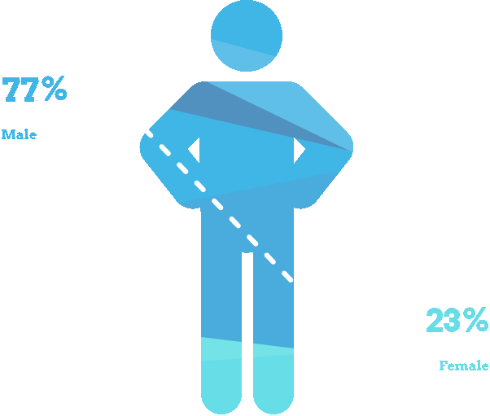

Impact Report
September-November 2014
CoderDojo Scotland
Scroll down
<report>

Locations
- Highlands (Moray)
- 3 Dojos, 31 participants
- Stirling
- 2 Dojos, 17 participants
- Edinburgh (CodeBase and Microsoft Scotland)
- 2 Dojos, 27 participants
- Glasgow (Glasgow Science Centre)
- 103 Dojos, 5 participants
- Glasgow (Castlemilk)
- 1 Dojo, 7 participants
- Glasgow (Royston)
- 4 Dojos, 75 participants
- Glasgow (Easterhouse)
- 1 Dojo, 3 participants
- Glasgow (Mitchell Library)
- 3 Dojos, 30 participants
- Livingston
- 3 Dojos, 54 participants
- Kilwinning
- 1 Dojos, 14 participants

Gender Divide
This year the number of girls at our CoderDojos have increased.


2014
- Jun 72 Participants
- Jul 75 Participants
- Aug 89 Participants
Niall, 13
"Computing science is a large part of jobs nowadays. I’m learning a new language. I could see myself doing web design when I’m older"
Young Coder, 11
"CoderDojo helped me understand how important coding is for the creation of games...I think i'm more confident with basic coding."
Retention
In this period, 59 participants were new to CoderDojo. But we had 129 young people return to our workshops. Some young people have now attended over 20 CoderDojos.


Mentors
Mentors share their enthusiasm of digital making with a younger generation. Over the reporting period they have 'donated' an estimated 240 hours of their time.
“I enjoy helping young people get into technology because it’s fantastic! I believe in giving back and CoderDojo is a wonderful way to teach computing skills to teach makers, not just consumers.” - Emma, CoderDojo Mentor
"It’s getting in their heads that they can be makers rather than consumers. With the number of jobs in computer science growing and there not being enough qualified people to fill them we need to make a change. We can't have Scotland left behind in relation to technology." - Martin, CoderDojo Mentor
</report>